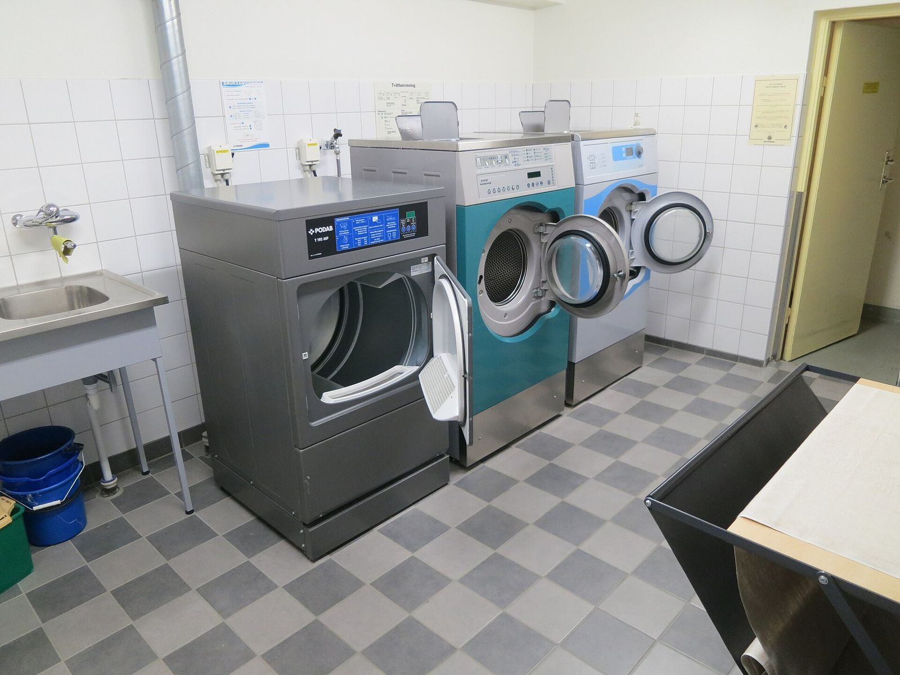

Preparation & screeding
Preparing and, where needed, screeding the laundry floor.
/Renovations
Floor preparation, waterproofing and tiling handled as one job, for a laundry that's built to cope with daily use, not just look good on day one.

Laundries deal with water every day, from washing machines and troughs to general cleaning and spills. That means the floor and relevant wet-area wall surfaces need to be properly prepared, with waterproofing and tiling carried out where required.
The same principles apply as in a bathroom, although the scope is often smaller. Floor levels and falls toward the waste are particularly important where a floor waste is present.
Where a floor waste is present, its position and the floor falls need to be considered so water can drain correctly. This becomes particularly useful in laundries that also serve as mud rooms or utility areas.
/How it works
Preparing and, where needed, screeding the laundry floor.
Waterproofing the floor and any relevant wall areas.
Tiling the floor and any splashback areas to complete the space.
Laundry tiling generally favours durable, easy-to-clean surfaces. Ceramic and porcelain tiles are common choices for floors and splashback areas because they're practical for a room that sees regular foot traffic, water and everyday spills.
Tile size, grout colour and layout can also make a difference to how easy the finished laundry is to maintain.
Our laundry renovation work focuses on the floor preparation, screeding where required, waterproofing and tiling involved in the job. If the renovation also requires plumbing, electrical work, cabinetry or other specialist trades, the scope can be discussed before work begins so you know what's included.
A laundry can be re-tiled and re-waterproofed on its own, or handled alongside a bathroom or kitchen renovation happening at the same time.
Top Tier Tiling Group works on laundry renovations and wet-area projects across Melbourne.
Get in touch with Top Tier Tiling Group to talk through your job and request a quote.

/Questions & answers
Waterproofing requirements depend on the layout, wet areas and scope of the renovation. Where waterproofing is required, it is completed before the relevant tiling work.
Yes. A laundry can be re-tiled, prepared and waterproofed while keeping the existing layout, depending on the condition of the room and what's being changed.
It depends on the existing floor. Screeding may be needed where the surface requires levelling or the correct falls need to be established before waterproofing and tiling.
Yes. Laundry work can be carried out alongside a bathroom or other renovation, depending on the scope and timing of the projects.